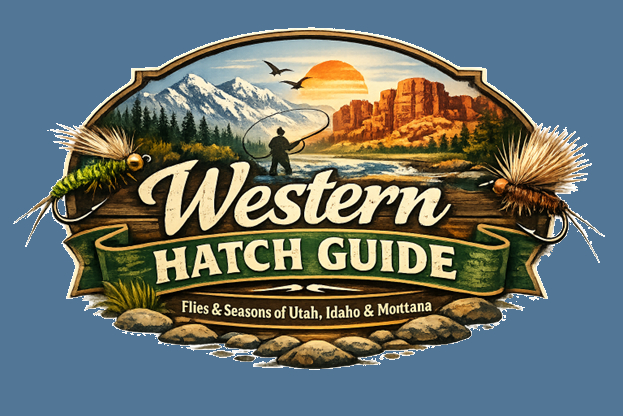

Mission Statement
Western Hatch Guide, your go to website that details what to throw, where, and when, to keep you spending more time fishing, and less time deciding what to tie. You catch more fish when you aren’t guessing. This is targeted at fly fishing anglers who are new or experienced, and will be a pocket guide on what to throw during each season, allowing anglers to hookup on more fish.